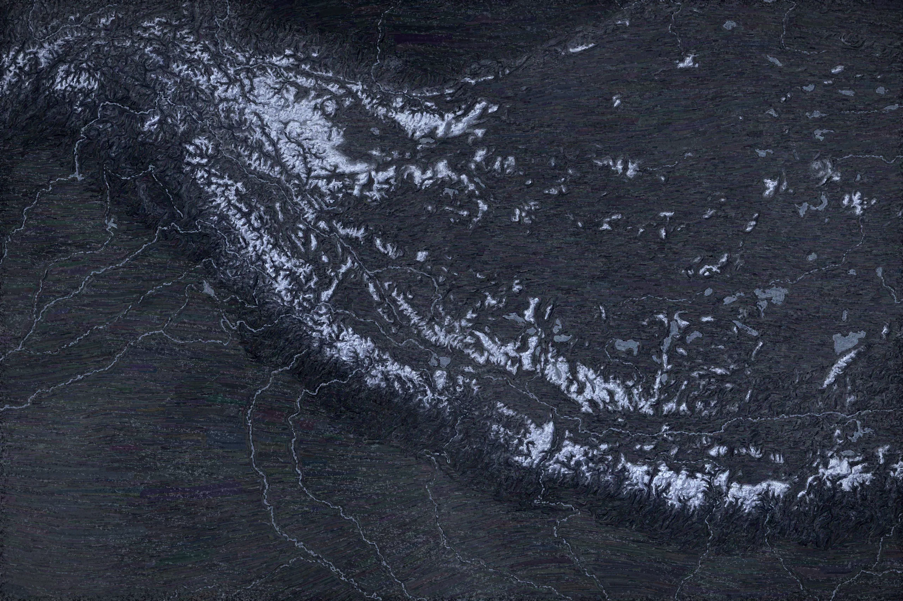

Himalaya · Karakórum
Los 14ochomiles
Catorce cumbres por encima de los ocho mil metros, en un solo arco de mil quinientos kilómetros. Elige una en el mapa y sube.
- 8 exploradas
- 6 sin levantar
Índice de la expedición
Las catorce cumbres de la Tierra que pasan de los ocho mil metros, de la más alta a la más baja. Las que ya tienen su web se abren desde aquí o desde el mapa.